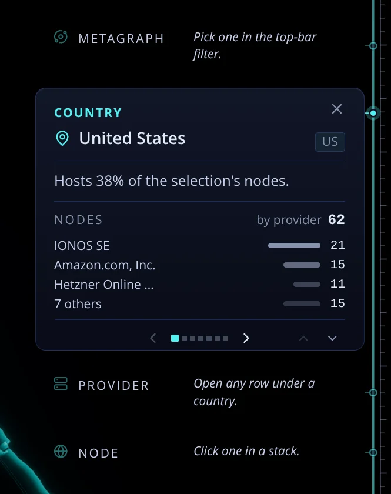
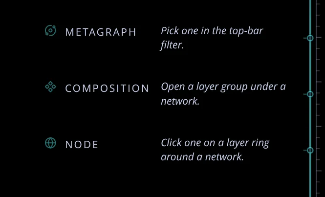

The rail's empty rungs: a card the view can produce but nothing is selected for yet. Each option is drawn
for the Geography rail with a country committed, so the ghosts sit above and below a real box, the state the
"now" shot shows. Copy is unchanged unless the option says so.
0Now
Three columns: a 45% icon, a fixed caps label column and an italic hint. Each ghost is two or three
lines tall because the hint wraps inside its column, and all of them look equally actionable, though only one is the
next step down.
live, 2026-10-04

live, nothing selected

AOne quiet line, the hint on hover
Each ghost becomes the rung's name alone, one line, about 30px. The hint appears on hover (a tooltip) and is the accessible description.
This is the quietest version. The rail reads as a short list of what exists rather than a column of instructions.
Trade-off: the "how" is hidden. On touch there is no hover, so the hint would have to show on tap.
Metagraph
Country
United States
Hosts 38% of the selection's nodes.
Providerhow?
Open any row under a country.
Node
BThe empty slot drawn as a slot
A dashed outline at entry width says "a card goes here". The label sits on line one and the hint below it, upright and unwrapped.
This is the clearest "empty" signal, and the pile keeps one rhythm whether a rung is full or empty.
Trade-off: it brings back a frame that the 2026-08-08 redesign removed ("an empty slot must not be a box at all"), and three dashed boxes can be busy.
Metagraph
Pick one in the top-bar filter.
Country
United States
Hosts 38% of the selection's nodes.
Provider
Open any row under a country.
Node
Click one in a stack.
CTwo lines, no column, the next step lit recommended
The label sits on line one and the hint below it, indented to the label, so the hint uses the full width and stays one line.
The rung directly below the deepest commit is lit (full ink, accent icon), because that is the one gesture that moves the reader on. The ghost above the box and any rung further down stay quiet.
No frame, so the 2026-08-08 rule holds. It answers "everything looks the same" without adding chrome.
Metagraph
Pick one in the top-bar filter.
Country
United States
Hosts 38% of the selection's nodes.
Provider
Open any row under a country.
Node
Click one in a stack.
nothing selected
Metagraph
Pick one in the top-bar filter.
Country
Click one on the globe.
Provider
Open any row under a country.
Node
Click one in a stack.
"Next" is computable from what already exists: the ladder's rung order (focusLadder.ts) and the rail's committed rungs. With nothing committed, the first rung is next.
DA ladder list: names only, the next one says how
Every ghost is one caps line, and only the next rung carries its hint, right-aligned on the same line.
This is the most compact: the rail reads as a short, indexed ladder.
Trade-off: the right-aligned hint has to be short to fit beside the label (about 30 characters); some current hints would need trimming ("Open a row under a country").